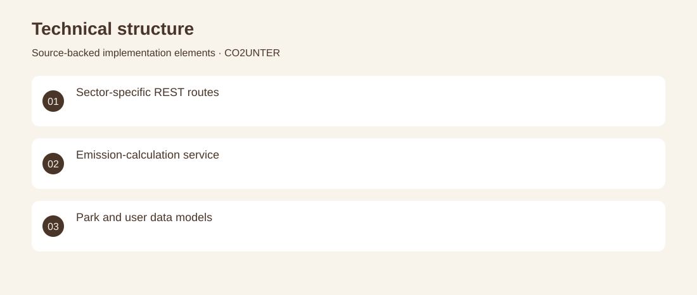
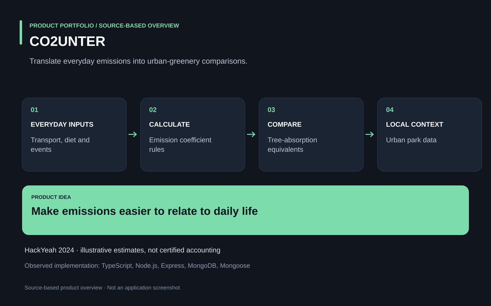

The project
Carbon-emission figures are difficult to relate to everyday choices and local green spaces. A hackathon backend calculates estimates for transport, diet, services and events, then relates those figures to trees and urban parks. Contributed the TypeScript API, emission-calculation services and MongoDB models for users and green spaces. HackYeah 2024 prototype with illustrative coefficients; not a certified emissions-accounting system.
The problem
Carbon-emission figures are difficult to relate to everyday choices and local green spaces.
The solution
A hackathon backend calculates estimates for transport, diet, services and events, then relates those figures to trees and urban parks.
My contribution
Contributed the TypeScript API, emission-calculation services and MongoDB models for users and green spaces.
Technical structure

Product overview

The portfolio cover is an editorial illustration. No live product screenshot is presented for this project.
Showcase assets
{kind=link}
{kind=link}
{kind=link}
New portfolio identity. Newly designed marks are portfolio treatments, not claims of official client branding.